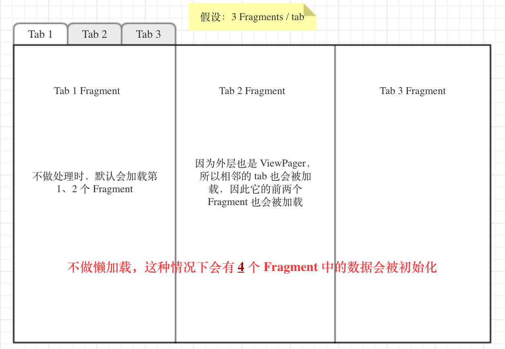

Fragment 数据懒加载及原理

Fragment 的懒加载算是比较常见的功能了，但是之前一直没有仔细研究过，直到最近有这方面的需求，所以就写下这篇文章记录下自己的探索过程。
起因
最近据后台同事反馈说，某些接口调用的频率有点高，而这块业务还没完全开放，照理说很少会用到，于是让我查查怎么回事。
我看了下日志，把网络请求日志过滤出来，发现的确有问题，每次打开首页后都有许多那块业务相关的网络请求。于是马上联想到可能是因为首页改版之后嵌套使用了 ViewPager，业务未完全开放的那个 fragment 里嵌套了一个 ViewPager，里面有多个 fragment，这样每次打开首页都会去加载该 page，然后是一连串的 fragment 初始化以及网络请求，所以为了解决该问题就不得不使用懒加载。
最终想要实现的效果是：1) 当 fragment 不可见的时候不加载数据；2) 当数据已经加载过之后，除非手动刷新否则不重新请求数据。
预加载与 setUserVisibleHint()
首先，默认情况下，由于 ViewPager 会预加载左右两边相邻的至少 1 个 fragment，通过 setOffscreenPageLimit() 设置预加载 page 数为 0 并不会起作用，这点从 ViewPager 的源码中可以看到：
1 | |
从以上源码可以看出相邻 fragment 的加载是必然的，但是我们如果可以得知 fragment 可见性，那么就可以在 fragment 可见时才去加载数据。这样虽然不是完全的懒加载，只是数据懒加载，但是同样也可以满足我们的需求了。
那么 fragment 中有没有可以获取当前 fragment 是否可见的方法呢，当然是有的，它就是 **setUserVisibleHint(boolean isVisibleToUser)**。
无论你使用的是 FragmentPagerAdapter 还是 FragmentStatePagerAdapter，当它们初始化 fragment 的时候，该方法都会被调用两次。
一次是在实例化的时候，也就是在 instantioateItem() 方法中：
1 | |
一次是在用户滑动到当前 fragment 的时候，在 setPrimaryItem() 方法中：
1 | |
另外，当用户从当前 fragment 滑出的时候，setPrimaryItem() 方法也会被调用。
来看下 setUserVisibleHint() 的注释：
Set a hint to the system about whether this fragment’s UI is currently visible to the user. This hint defaults to true and is persistent across fragment instance state save and restore.
An app may set this to false to indicate that the fragment’s UI is scrolled out of visibility or is otherwise not directly visible to the user. This may be used by the system to prioritize operations such as fragment lifecycle updates or loader ordering behavior.
系统正是通过该方法来判断当前 fragment 的 UI 是否对用户可见，而该方法被暴露出来的主要目的也是让我们可以提醒系统当前 fragment 已经不可见了，是时候重新更新 fragment 的生命周期了。
不过如果只是实现数据懒加载，我们不需要直接去调用该方法，只要覆写它并实现控制数据加载的逻辑就可以了。
这里我参考了一种比较简便的做法，原文来自 尹star 的 ViewPager+Fragment LazyLoad 最优解。
实现效果：

项目地址：aJIEw/DemoUI-LazyLoadFragment
可以看到只有第一次进入 fragment 的时候才会加载数据，而且也不会主动加载相邻的 fragment 或者已经加载过的数据了。
如何实现及其原理（Koltin 实现）
首先，由于 setUserVisibleHint() 会在 fragment 实例化时就先被调用 (在 onAttach() 之前)，所以我们最好在 view 创建完毕之后加载数据，因此需要设置一个 view 是否初始化完毕的标志位。另外，当然也需要一个 view 是否可见的标志位，只有等到 view 可见才允许加载。然后还可以选择保存数据的初始化状态，这样可以控制在 fragment 生命周期中的合适时机重新加载数据。所以，我们需要以下 3 个标志位：
1 | |
然后接下来分为两种情况，一种是 view 初始化完毕但是此时还不可见的情况。很显然，我们只要判断 setUserVisibleHint() 中参数的值就可以了：
1 | |
还有一种情况是，如果当前 fragment 是整个 ViewPager 的第一个 fragment，那么 setUserVisibleHint(true) 会在 view 初始化之前就在 setPrimaryItem()中被调用，此时 view 已经可见了，但是我们要等到 view 初始化才加载数据，所以我们要在某个地方判断 view 是否已经初始化并且去加载数据。
最好的地方是在 onActivityCreated() 中。根据 fragment 生命周期我们知道，onActivityCreated() 会在 onCreateView() 之后调用，此时 view 已经初始化完毕，我们可以在这里将 isViewInitiated 标记为 true，同时在这里为第一个显示的 fragment 加载数据：
1 | |
最后，我们还需要判断下数据是否已经加载过，避免重复加载。
我们将以上所有判断逻辑写在 prepareFetchData() 中，判断条件为 view 已经初始化、可见且数据未加载：
1 | |
最后再定义一个抽象方法 fetchData()，让子类去实现：
1 | |
这样一个完整的数据懒加载就实现完毕了。
验证想法
我们可以看下以上操作的日志来验证下我们的想法。
1. 首次打开
第一次打开，FirstFragment 作为第一个可见的 fragment 立马被初始化：

此时 isVisibleToUser 会在 isViewInitiated 之前设为 true，所以 FirstFragment 会在 onActivityCreated() 中真正开始获取数据。
另外，由于预加载的存在，SecondFragment 也会被创建，但是此时还不可见：

2. 移动到 SecondFragment
当滑动到 SecondFragment 的时候，SecondFragment 状态变为可见，setUserVisibleHint(true) 被调用，所以开始获取数据：

而此时 FirstFragment 由可见变为不可见：

ThirdFragment 则开始第一次被创建，同样此时并不可见：

3. 移动到 ThirdFragment
当滑动到 ThirdFragment 的时候，状态变为可见，所以也就开始获取数据：

此时 SecondFragment 由可见变为不可见：

而 FirstFragment 由于超出了 ViewPager 可以保存的 Fragment 的数量，所以被销毁：

4. 回到 SecondFragment
此时 SecondFragment 重新变得可见：

而 FirstFragment 也开始重新被创建：

5. 回到 FirstFragment
此时 FirstFragment 重新变得可见，虽然 FirstFragment 之前被销毁了，但是由于之前获取的数据会被恢复，所以现在不会重新去获取数据：

当然我们也可以选择在 onDestroy() 中将 isDataInitiated 置为 false，这样每次 fragment 重新创建都会重新获取数据。当然前提是你使用的是 FragmentStatePagerAdapter，因为如果使用 FragmentPagerAdapter，不会每次都调用 onDestroy()，fragment 实例会被保存。而 SecondFragment 再次变得不可见，ThirdFragment 被销毁，过程与 3 中移动到 ThirdFragment 类似，这里就不截图了。
通过以上日志，验证了我们的想法是对的。
另外，如果是 ViewPager 嵌套 ViewPager 其实效果也是一样的，如果不做特殊处理，相邻的 fragment 的会被加载，导致该 fragment 中的 ViewPager 会去加载其中的 fragment。
